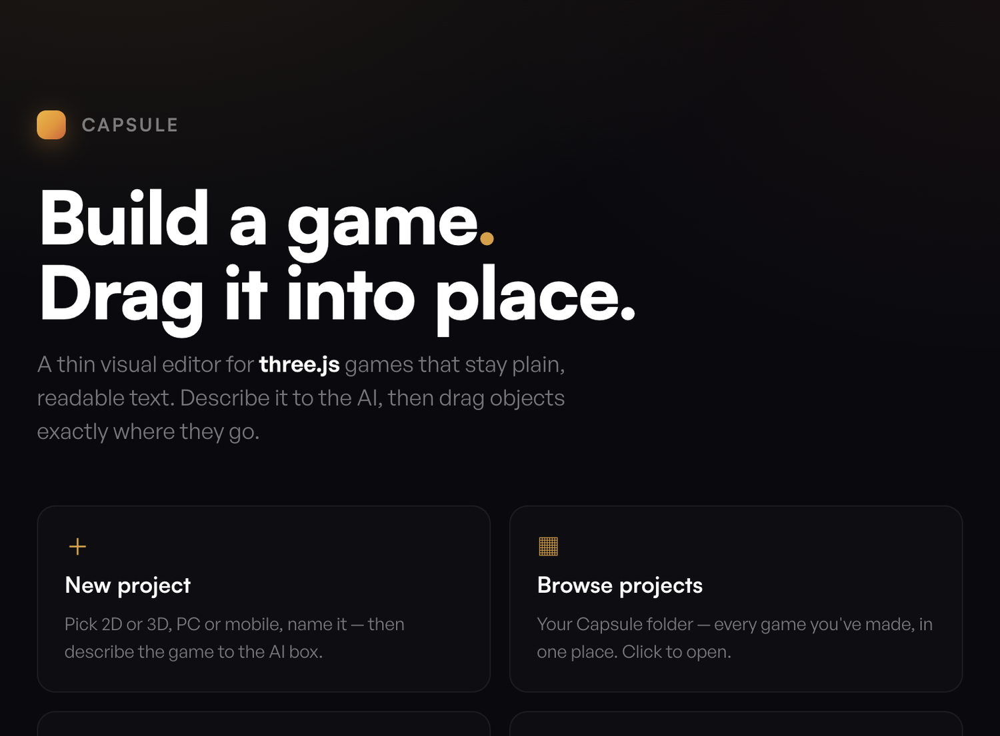
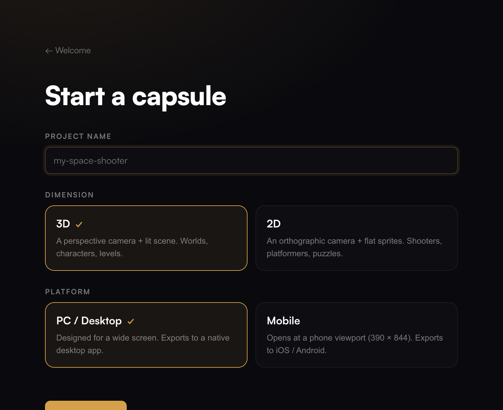
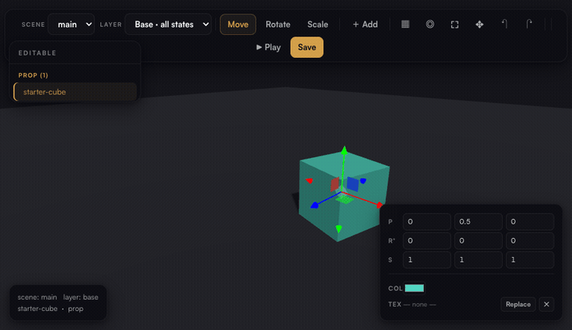
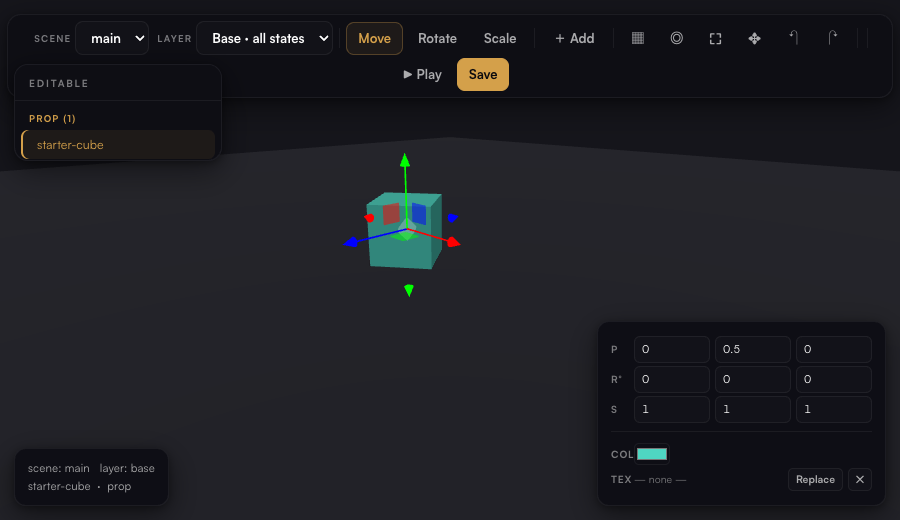
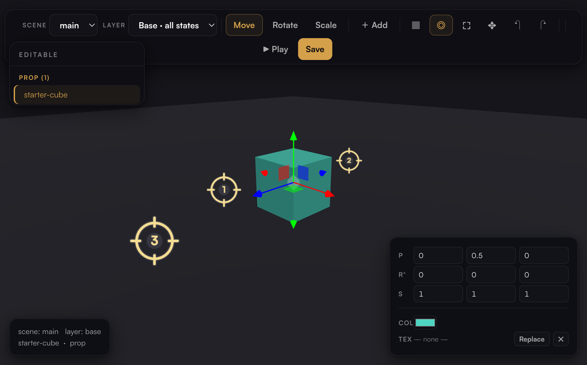
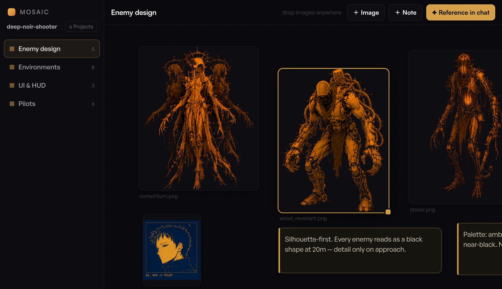
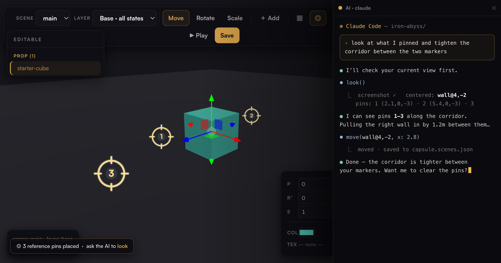

Help · Getting started
Build a game.
Drag it into place.
Capsule is a thin visual editor for three.js games that stay plain, readable text — no build step, no bundler, nothing to compile. You describe the game to an AI, and Capsule gives you the one thing the AI can't do: reach into the 3D scene and put things exactly where they go.

The idea
Why there's barely an editor
An AI writes the HTML, the game loop, the shaders — all of it — top to bottom, no problem. The one thing it's genuinely bad at is placing and moving things in 3D space. "Put the crate two meters left of the door, rotated 30°" is slow and error-prone in code. Dragging it there takes a second.
That gap is the whole product. Capsule is the viewport that lets you grab an object and move it; everything else stays plain text the model owns. There's no asset pipeline, no scene format to learn, no bloat — just readable files an agent can open and change, and a game running one second later.
The format
What a capsule is
A capsule is a folder of plain web files. That's the moat: any model can read the whole game as text and understand it.
index.html entry — HTML, CSS, and the game's JS capsule.scenes.json object placements the editor writes assets/ models, textures, audio — drop them in mosaic/ your visual moodboard (never ships in the game) CLAUDE.md / AGENTS.md context for your AI of choice
Edit a file, save, the preview reloads. If you're reaching for webpack, TypeScript, or a
package.json of runtime deps — stop. That breaks the thing that makes it fast.
Workflow
Start a game
- 01
New project
Pick 2D or 3D, PC or mobile, and name it. Capsule scaffolds a tiny starter and drops it in your
~/Capsulefolder. - 02
Describe it to the AI
Open the AI box (⌘J) and tell it what you're making. It writes the code and places things live in the scene through Capsule.
- 03
Drag to refine
Grab anything the AI placed and move, rotate, or scale it by hand. Hit ▶ Play to run the real game at any moment.

The editor
Move things exactly where they go
Anything the game tags as editable shows up in the panel, grouped by type. Click it to fly the camera
in, then drag the gizmo — W move, E rotate, R scale — or type exact
numbers in the inspector. Save writes it all to a readable capsule.scenes.json.


There's more under the same roof: mesh mode (▦) to edit and retexture any wall or floor, duplicate (D) that keeps an object's collision and attributes, and scenes & states so one place can have day/night or floor-by-floor variants.
capsule.add(obj, {collide, light, sound, behavior})
and its collision box, light, and sound move with it when you drag — no invisible walls left behind.Point the AI at what you mean
"Move that thing over there — no, that one." Aim the camera, or drop numbered reference pins on any surface, and ask the AI to look. It gets a screenshot of your exact view plus what you centered and each pin's real coordinates — so "extend the upper floor between these two pins" just works.

Click a pin to remove it, ⇧-click ◎ to clear them all. It's the difference between describing a spot in a paragraph and just pointing at it. This is how you brief an AI on a 3D scene.
Visual direction
Mosaic — brief the AI with pictures
Models design far better from images than from prose. Mosaic is a per-project moodboard: drag concept art, screenshots, and storyboards onto a freeform canvas, sort them into boards, and hit ✦ Reference in chat. It types "look at the references in ./mosaic/characters/…" into the AI box so you just finish the sentence — "…make a sprite like this one."

mosaic/ — and it never ships inside the exported game. Example art from Iron Abyss (© OTR HVN).Open Mosaic with no project to start design-first: collect references, then spin up an empty game and build straight from them.
Your model, your keys
Bring your own AI
There's almost nothing to "integrate" — the game is already readable text. Point the AI box at whatever
you want: Claude Code, Codex, aider, or a local model. It runs in the project folder with your
real shell, so it uses each tool's own auth. Through Capsule's editor tools it can see the scene
(screenshot, look) and place things (select, move) — the same
handles you use.

Ship it
Export to a real app
When it's ready, wrap the capsule into a native executable for macOS, Windows, and Linux, or a mobile project for iOS / Android. The game inside stays the same readable files — the wrapper is only a shell. Your moodboard and editor tooling are left out automatically.